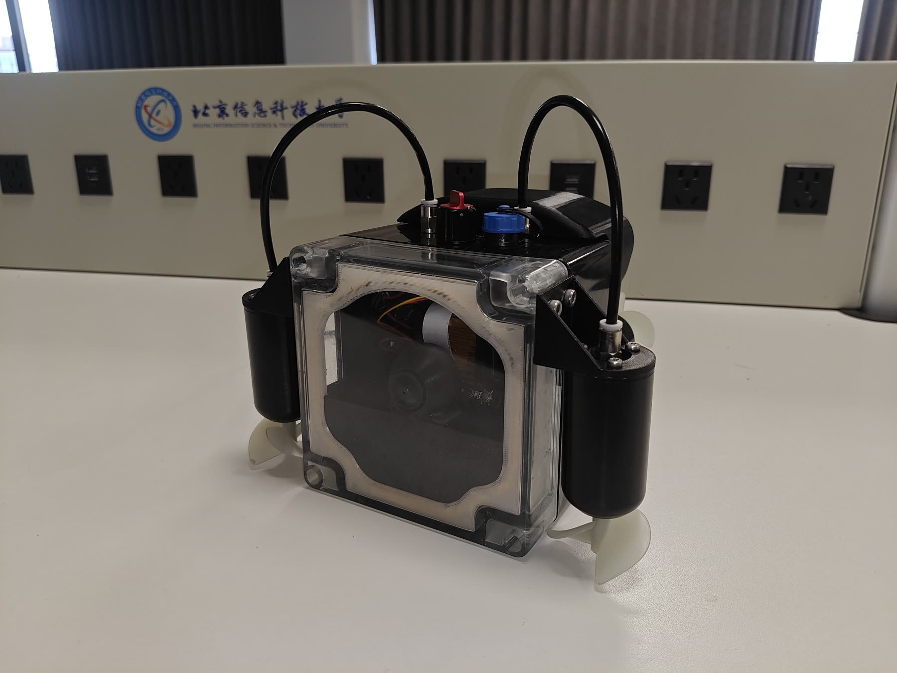

工程样机仍在开发
个人项目 · 2025 至今01
Project Remo
这是我正在推进的个人项目：一台能在水下主动找人、跟随并拍摄的相机，主要面向潜水、浮潜和海岛活动。
它是什么
相机主机、声学 Beacon 和 App 组成的一套水下跟拍系统
我在做什么
产品定义、整机设计、软硬件原型、专利和项目推进
做到哪了
已经有 POC 样机并做过水测，声学与视觉融合跟随还在继续开发
目前，全景相机搭载相关工作只做到前期研发和 Demo，不属于 Insta360 官方合作或授权项目。
水声定位嵌入式控制PCB机械结构影像算法
查看 Project Remo 独立站